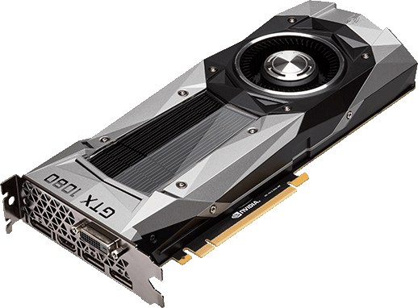

Видеокарта представляет собой карту расширения материнской платы и обеспечивает обработку видеоданных. Видеоподсистема, как правило, встроена в материнскую плату. В этом случае видеоплата не нужна. Однако когда необходимо улучшить видеоподсистему, что требуется при функционировании современных компьютерных игр, можно установить видеокарту.
Особенностью видеокарт является наличие так называемого графического процессора, который снимает часть вычислительных функций с центрального процессора, в последних моделях – не только для ускорения прорисовки изображений на экране, но и для несвойственных графических функций.
Видеокарта может иметь свой собственный вентилятор для охлаждения своего процессора, имеет стандартные разъемы для подключения монитора (наиболее распространен разъем D-Sub, имеющий 15 контактов, в три ряда по 5 контактов), современные виды разъемов - DVI и HDMI, которые унифицированы и могут подключаться друг к другу через специальные переходники, разъем для подключения телевизора и бытовых видеосистем – S-Video (для подключения так называемых тюльпанов, проводов с цветными штекерами).
Перед приобретением видеоплаты проверьте ее соответствие возможностям вашего компьютера. Если компьютер имеет ограничения в быстродействии и объеме памяти, то преимущества новой видеокарты будут небольшими. Также при работе на компьютере с приложениями, не требующих хорошую графику, встроенная видеоподсистема обычно не требует замены.
При перобретении видео карты следует обратить внимание на характеристики предоставленные в таблице 1.
| Тактовая частота видеочипа | Отображает количество тактов в секунду. |
| Скорость заполнения (филрейт) | Показывает с какой скоростью видеочип способен отрисовывать пиксели. |
| Количество вычислительных (шейдерных) блоков или процессоров | Пожалуй, сейчас эти блоки — главные части видеочипа. Они выполняют специальные программы, известные как шейдеры. |
| Объём видеопамяти | Собственная память используется видеочипами для хранения необходимых данных: текстур, вершин, данных буферов и т. п. |
| Ширина шины памяти | Ширина шины памяти является важнейшей характеристикой, влияющей на пропускную способность памяти (ПСП). Большая ширина позволяет передавать большее количество информации из видеопамяти в GPU и обратно в единицу времени, что положительно влияет на производительность в большинстве случаев. |